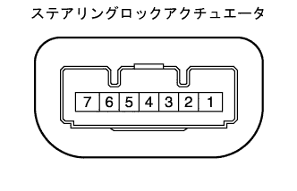
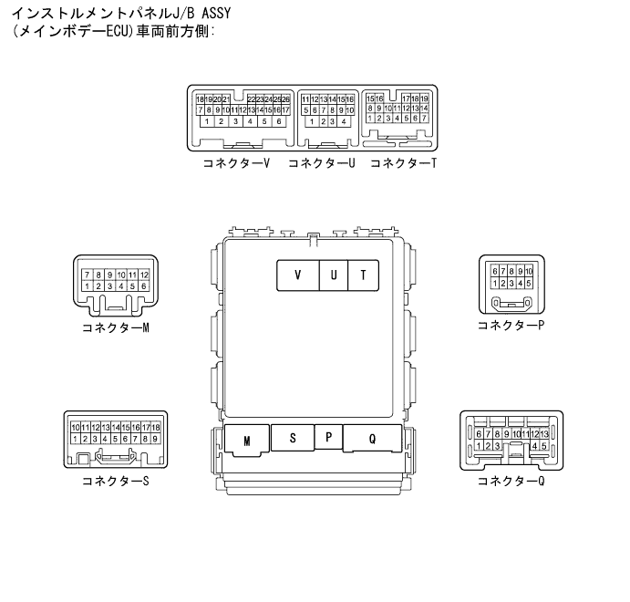

Steering Lock System Terminals of ECU |
Using SST (Toyota electrical tester), inspect the battery voltage with the IG ON.
Using SST (Toyota electrical tester), inspect the voltage and resistance between the terminals of the steering lock ECU, or between the terminals and body ground.
 |
| Terminal No. (Symbol) | Input/Output | Measurement Item | Measurement Condition | Standard |
|---|---|---|---|---|
| 1 (GND) ←→ Body ground | - | Resistance | Always | Below 1 Ω |
| 2 (SGND) ←→ Body ground | - | Resistance | Always | Below 1 Ω |
| 3(IGE)←→1(GND) | Input | Voltage | Motor not operating → operating | 11 to 14V → 1V or less |
| 4(SLP1)←→2(SGND) | Output | Voltage | Lock → Unlock | 11 to 14V ←→ 1V or less |
| 5 (LIN) (Immobiliser ECU communication line) | Input/Output | - | - | - |
| 6(IG2)←→1(GND) | Input | Voltage | IG ON | 11 to 14 V |
| 7(B)←→1(GND) | Input | Voltage | Always | 11 to 14 V |

Using SST (Toyota electrical tester), inspect the battery voltage with the IG ON.
Using SST (Toyota electrical tester), inspect the voltage between the terminals of the steering lock ECU, or between the terminals and body ground.
| Terminal No. | Item | Measurement Condition | Specified Condition |
|---|---|---|---|
| V7(SLR+)←→U4(GND2) | Voltage | Steering motor driven → not driven | 1V or less → 11to14V |